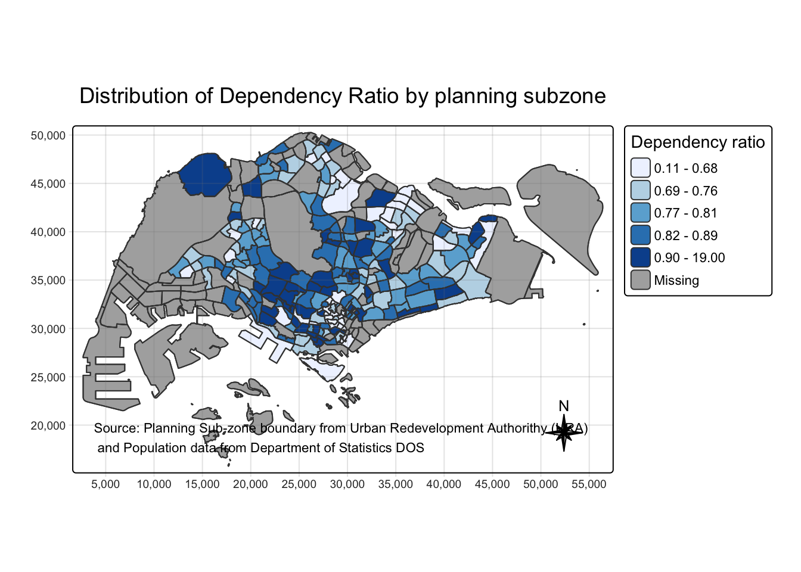
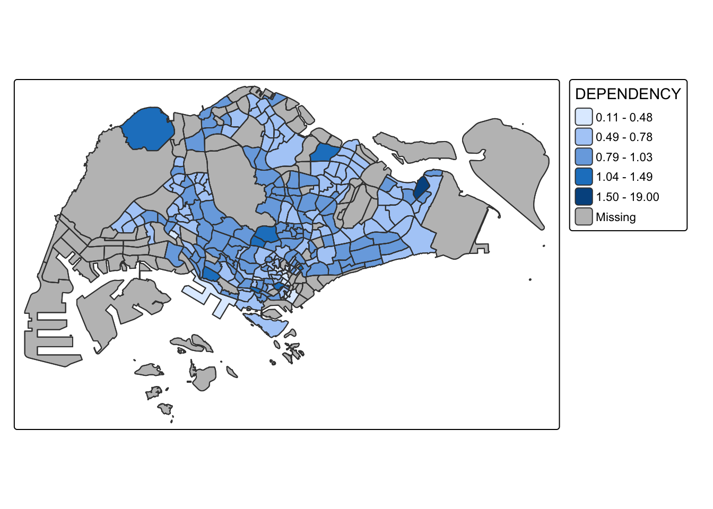
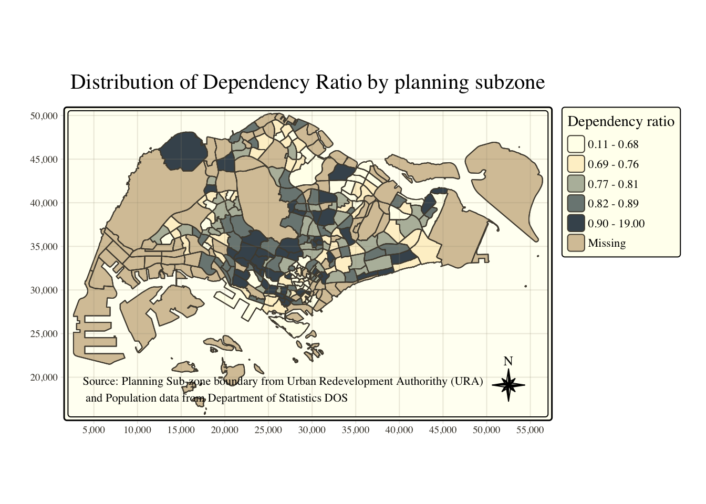
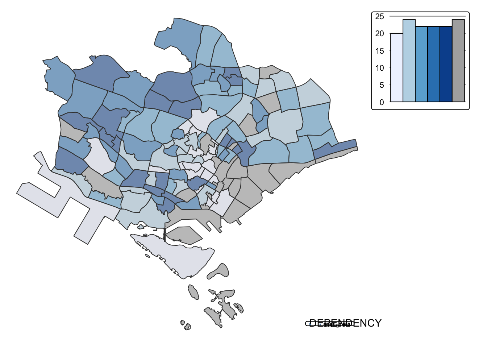

pacman::p_load(sf, tmap, tidyverse)Hands-on Exercise 9 (Part 1)
Choropleth Mapping with R
Learning Outcome
Choropleth mapping involves the symbolisation of enumeration units, such as countries, provinces, states, counties or census units, using area patterns or graduated colors. For example, a social scientist may need to use a choropleth map to portray the spatial distribution of aged population of Singapore by Master Plan 2014 Subzone Boundary.
In this chapter, you will learn how to plot functional and truthful choropleth maps by using an R package called tmap.
Getting Started
In this hands-on exercise, the key R package used is the tmap package in R. Beside tmap, four other R packages will be used:
- readr for importing delimited text files,
- tidyr for tidying data,
- dplyr for wrangling data, and
- sf for handling geospatial data.
Among the four packages, readr, tidyr and dplyr are part of the tidyverse package.
The code chunk below will be used to install and load these packages in RStudio.
Importing Data into R
The Data
Importing Geospatial Data into R
mpsz <- st_read(dsn = "../data/geospatial/MP14_SUBZONE_WEB_PL",
layer = "MP14_SUBZONE_WEB_PL")Reading layer `MP14_SUBZONE_WEB_PL' from data source
`/Users/th4nhf/ISSS608-VAA/data/geospatial/MP14_SUBZONE_WEB_PL'
using driver `ESRI Shapefile'
Simple feature collection with 323 features and 15 fields
Geometry type: MULTIPOLYGON
Dimension: XY
Bounding box: xmin: 2667.538 ymin: 15748.72 xmax: 56396.44 ymax: 50256.33
Projected CRS: SVY21You can examine the content of mpsz by using the code chunk below.
mpszSimple feature collection with 323 features and 15 fields
Geometry type: MULTIPOLYGON
Dimension: XY
Bounding box: xmin: 2667.538 ymin: 15748.72 xmax: 56396.44 ymax: 50256.33
Projected CRS: SVY21
First 10 features:
OBJECTID SUBZONE_NO SUBZONE_N SUBZONE_C CA_IND PLN_AREA_N
1 1 1 MARINA SOUTH MSSZ01 Y MARINA SOUTH
2 2 1 PEARL'S HILL OTSZ01 Y OUTRAM
3 3 3 BOAT QUAY SRSZ03 Y SINGAPORE RIVER
4 4 8 HENDERSON HILL BMSZ08 N BUKIT MERAH
5 5 3 REDHILL BMSZ03 N BUKIT MERAH
6 6 7 ALEXANDRA HILL BMSZ07 N BUKIT MERAH
7 7 9 BUKIT HO SWEE BMSZ09 N BUKIT MERAH
8 8 2 CLARKE QUAY SRSZ02 Y SINGAPORE RIVER
9 9 13 PASIR PANJANG 1 QTSZ13 N QUEENSTOWN
10 10 7 QUEENSWAY QTSZ07 N QUEENSTOWN
PLN_AREA_C REGION_N REGION_C INC_CRC FMEL_UPD_D X_ADDR
1 MS CENTRAL REGION CR 5ED7EB253F99252E 2014-12-05 31595.84
2 OT CENTRAL REGION CR 8C7149B9EB32EEFC 2014-12-05 28679.06
3 SR CENTRAL REGION CR C35FEFF02B13E0E5 2014-12-05 29654.96
4 BM CENTRAL REGION CR 3775D82C5DDBEFBD 2014-12-05 26782.83
5 BM CENTRAL REGION CR 85D9ABEF0A40678F 2014-12-05 26201.96
6 BM CENTRAL REGION CR 9D286521EF5E3B59 2014-12-05 25358.82
7 BM CENTRAL REGION CR 7839A8577144EFE2 2014-12-05 27680.06
8 SR CENTRAL REGION CR 48661DC0FBA09F7A 2014-12-05 29253.21
9 QT CENTRAL REGION CR 1F721290C421BFAB 2014-12-05 22077.34
10 QT CENTRAL REGION CR 3580D2AFFBEE914C 2014-12-05 24168.31
Y_ADDR SHAPE_Leng SHAPE_Area geometry
1 29220.19 5267.381 1630379.3 MULTIPOLYGON (((31495.56 30...
2 29782.05 3506.107 559816.2 MULTIPOLYGON (((29092.28 30...
3 29974.66 1740.926 160807.5 MULTIPOLYGON (((29932.33 29...
4 29933.77 3313.625 595428.9 MULTIPOLYGON (((27131.28 30...
5 30005.70 2825.594 387429.4 MULTIPOLYGON (((26451.03 30...
6 29991.38 4428.913 1030378.8 MULTIPOLYGON (((25899.7 297...
7 30230.86 3275.312 551732.0 MULTIPOLYGON (((27746.95 30...
8 30222.86 2208.619 290184.7 MULTIPOLYGON (((29351.26 29...
9 29893.78 6571.323 1084792.3 MULTIPOLYGON (((20996.49 30...
10 30104.18 3454.239 631644.3 MULTIPOLYGON (((24472.11 29...Importing Attribute Data into R
Next, we will import respopagsex2011to2020.csv file into RStudio and save the file into an R dataframe called popagsex.
The task will be performed by using read_csv() function of readr package as shown in the code chunk below.
popdata <- read_csv("../data/aspatial/respopagesextod2011to2020.csv")Data Preparation
Before a thematic map can be prepared, you are required to prepare a data table with year 2020 values. The data table should include the variables PA, SZ, YOUNG, ECONOMY ACTIVE, AGED, TOTAL, DEPENDENCY.
- YOUNG: age group 0 to 4 until age group 20 to 24,
- ECONOMY ACTIVE: age group 25–29 until age group 60–64,
- AGED: age group 65 and above,
- TOTAL: all age groups, and
- DEPENDENCY: the ratio between young and aged against the economy active group.
Data wrangling
The following data wrangling and transformation functions will be used:
pivot_wider()of tidyr package, andmutate(),filter(),group_by()andselect()of dplyr package.
popdata2020 <- popdata %>%
filter(Time == 2020) %>%
group_by(PA, SZ, AG) %>%
summarise(`POP` = sum(`Pop`)) %>%
ungroup() %>%
pivot_wider(names_from=AG,
values_from=POP) %>%
mutate(YOUNG = rowSums(.[3:6])
+rowSums(.[12])) %>%
mutate(`ECONOMY ACTIVE` = rowSums(.[7:11])+
rowSums(.[13:15]))%>%
mutate(`AGED`=rowSums(.[16:21])) %>%
mutate(`TOTAL`=rowSums(.[3:21])) %>%
mutate(`DEPENDENCY` = (`YOUNG` + `AGED`)
/`ECONOMY ACTIVE`) %>%
select(`PA`, `SZ`, `YOUNG`,
`ECONOMY ACTIVE`, `AGED`,
`TOTAL`, `DEPENDENCY`)Joining the attribute data and geospatial data
Before we can perform the georelational join, one extra step is required to convert the values in PA and SZ fields to uppercase. This is because the values of PA and SZ fields are made up of upper- and lowercase. On the other hand, SUBZONE_N and PLN_AREA_N are in uppercase.
popdata2020 <- popdata2020 %>%
mutate(across(c(PA, SZ), toupper)) %>%
filter(`ECONOMY ACTIVE` > 0)Next, left_join() of dplyr is used to join the geographical data and attribute table using planning subzone name e.g. SUBZONE_N and SZ as the common identifier.
mpsz_pop2020 <- left_join(mpsz, popdata2020,
by = c("SUBZONE_N" = "SZ"))
Note
left_join() of dplyr package is used with mpsz simple feature data frame as the left data table to ensure that the output will be a simple features data frame.
write_rds(mpsz_pop2020, "../data/rds/mpszpop2020.rds")Choropleth Mapping Geospatial Data Using tmap
Two approaches can be used to prepare a thematic map using tmap:
- Plotting a thematic map quickly by using
qtm(). - Plotting a highly customisable thematic map by using tmap elements.
Plotting a choropleth map quickly by using qtm()
The easiest and quickest way to draw a choropleth map using tmap is qtm(). It is concise and provides a good default visualisation in many cases.
The code chunk below will draw a cartographic standard choropleth map as shown below.
tmap_mode("plot")
qtm(mpsz_pop2020,
fill = "DEPENDENCY")
Note
tmap_mode()with"plot"option is used to produce a static map. For interactive mode, the"view"option should be used.- The
fillargument is used to map the attribute (i.e. DEPENDENCY).
Creating a choropleth map by using tmap’s elements
Despite the usefulness of qtm() for drawing a choropleth map quickly and easily, its disadvantage is that it makes aesthetics of individual layers harder to control. To draw a high quality cartographic choropleth map, tmap’s drawing elements should be used.
tm_shape(mpsz_pop2020)+
tm_polygons(fill = "DEPENDENCY",
fill.scale = tm_scale_intervals(
style = "quantile",
n = 5,
values = "brewer.blues"),
fill.legend = tm_legend(
title = "Dependency ratio")) +
tm_title("Distribution of Dependency Ratio by planning subzone") +
tm_layout(frame = TRUE) +
tm_borders(fill_alpha = 0.5) +
tm_compass(type="8star", size = 2) +
tm_grid(alpha =0.2) +
tm_credits("Source: Planning Sub-zone boundary from Urban Redevelopment Authorithy (URA)\n and Population data from Department of Statistics DOS",
position = c("left", "bottom"))
In the following sub-section, we will share tmap functions that are used to plot these elements.
Drawing a base map
The basic building block of tmap is tm_shape() followed by one or more layer elements such as tm_fill() and tm_polygons().
In the code chunk below, tm_shape() is used to define the input data (i.e. mpsz_pop2020) and tm_polygons() is used to draw the planning subzone polygons.
tm_shape(mpsz_pop2020) +
tm_polygons()
Drawing a choropleth map using tm_polygons()
To draw a choropleth map showing the geographical distribution of a selected variable by planning subzone, we just need to assign the target variable such as DEPENDENCY to tm_polygons().
tm_shape(mpsz_pop2020)+
tm_polygons("DEPENDENCY")
Note
Things to note from tm_polygons():
- The default interval binning used to draw the choropleth map is called
"pretty". A detailed discussion of the data classification methods supported by tmap will be provided in sub-section 4.3. - The default colour scheme used is YlOrRd of ColorBrewer. You will learn more about the color scheme in sub-section 4.4.
- By default, missing values will be shaded in grey.
Drawing a choropleth map using tm_fill() and tm_borders()
Actually, tm_polygons() is a wrapper of tm_fill() and tm_borders(). tm_fill() shades the polygons by using the default colour scheme and tm_borders() adds the borders of the shapefile onto the choropleth map.
The code chunk below draws a choropleth map by using tm_fill() alone.
tm_shape(mpsz_pop2020)+
tm_fill("DEPENDENCY")
Notice that the planning subzones are shaded according to the respective dependency values.
To add the boundary of the planning subzones, tm_borders() will be used as shown in the code chunk below.
tm_shape(mpsz_pop2020)+
tm_polygons(fill = "DEPENDENCY") +
tm_borders(lwd = 0.01,
fill_alpha = 0.1)
Notice that light-gray border lines have been added on the choropleth map.
The alpha argument is used to define transparency — a number between 0 (totally transparent) and 1 (not transparent). By default, the alpha value of the col is used (normally 1).
Beside the alpha argument, there are three other arguments for tm_borders():
col= border colour,lwd= border line width. The default is 1, andlty= border line type. The default is"solid".
Data classification methods of tmap
Most choropleth maps employ some methods of data classification. The point of classification is to take a large number of observations and group them into data ranges or classes.
tmap provides a total of ten data classification methods: fixed, sd, equal, pretty (default), quantile, kmeans, hclust, bclust, fisher, and jenks.
To define a data classification method, the style argument of tm_fill() or tm_polygons() will be used.
Plotting choropleth maps with built-in classification methods
The code chunk below shows a quantile data classification that used 5 classes.
tm_shape(mpsz_pop2020)+
tm_polygons("DEPENDENCY",
fill.scale = tm_scale_intervals(
style = "jenks",
n = 5)) +
tm_borders(fill_alpha = 0.5)
In the code chunk below, equal data classification method is used.
tm_shape(mpsz_pop2020)+
tm_polygons("DEPENDENCY",
fill.scale = tm_scale_intervals(
style = "equal",
n = 5)) +
tm_borders(fill_alpha = 0.5)
Notice that the distribution of the quantile data classification method is more evenly distributed than the equal data classification method.
Warning
Maps Lie! Different classification methods can produce very different visual patterns from the same data. Always choose the method that best represents the underlying distribution.
TipDIY
Using what you have learned, prepare choropleth maps by using different classification methods supported by tmap and compare their differences.
TipDIY
Prepare choropleth maps using the same classification method but with different numbers of classes (i.e. 2, 6, 10, 20). Compare the output maps — what observation can you draw?
Plotting choropleth map with custom break
For all the built-in styles, the category breaks are computed internally. In order to override these defaults, the breakpoints can be set explicitly by means of the breaks argument to tm_fill(). It is important to note that, in tmap the breaks include a minimum and maximum. As a result, in order to end up with n categories, n+1 elements must be specified in the breaks option (the values must be in increasing order).
Before we get started, it is always a good practice to get some descriptive statistics on the variable before setting the break points. The code chunk below will be used to compute and display the descriptive statistics of the DEPENDENCY field.
summary(mpsz_pop2020$DEPENDENCY) Min. 1st Qu. Median Mean 3rd Qu. Max. NA's
0.1111 0.7147 0.7867 0.8585 0.8763 19.0000 92 With reference to the results above, we set break points at 0.60, 0.70, 0.80, and 0.90. In addition, we also need to include a minimum and maximum, which we set at 0 and 1.00. Our breaks vector is thus c(0, 0.60, 0.70, 0.80, 0.90, 1.00).
Now, we will plot the choropleth map by using the code chunk below.
tm_shape(mpsz_pop2020)+
tm_polygons("DEPENDENCY",
breaks = c(0, 0.60, 0.70, 0.80, 0.90, 1.00)) +
tm_borders(fill_alpha = 0.5)
Colour Scheme
Using ColourBrewer palette
To change the colour, we assign the preferred colour to the values argument of tm_scale_intervals() as shown in the code chunk below.
tm_shape(mpsz_pop2020)+
tm_polygons("DEPENDENCY",
fill.scale = tm_scale_intervals(
style = "quantile",
n = 5,
values = "brewer.greens")) +
tm_borders(fill_alpha = 0.5)
Notice that the choropleth map is shaded in green.
To reverse the colour shading, add a "-" prefix.
tm_shape(mpsz_pop2020)+
tm_polygons("DEPENDENCY",
fill.scale = tm_scale_intervals(
style = "quantile",
n = 5,
values = "-brewer.greens")) +
tm_borders(fill_alpha = 0.5)
Map Layouts
Map layout refers to the combination of all map elements into a cohesive map. Map elements include among others the objects to be mapped, the title, the scale bar, the compass, margins and aspect ratios. Colour settings and data classification methods covered in the previous section relate to the palette and break-points used to affect how the map looks.
Map Legend
In tmap, several tm_legend() options are provided to change the placement, format and appearance of the legend.
tm_shape(mpsz_pop2020)+
tm_polygons("DEPENDENCY",
fill.scale = tm_scale_intervals(
style = "jenks",
n = 5,
values = "brewer.greens"),
fill.legend = tm_legend(
title = "Dependency ratio")) +
tm_borders(fill_alpha = 0.5) +
tm_title("Distribution of Dependency Ratio by planning subzone \n(Jenks classification)")
Map style
tmap allows a wide variety of layout settings to be changed. They can be called by using tmap_style().
The code chunk below shows the classic style is used.
tm_shape(mpsz_pop2020)+
tm_fill("DEPENDENCY",
style = "quantile",
palette = "-Greens") +
tm_borders(alpha = 0.5) +
tmap_style("classic")
Cartographic Furniture
Beside map style, tmap also provides arguments to draw other map furniture such as compass, scale bar and grid lines.
In the code chunk below, tm_compass(), tm_scale_bar() and tm_grid() are used to add compass, scale bar and grid lines onto the choropleth map.
tm_shape(mpsz_pop2020)+
tm_polygons(fill = "DEPENDENCY",
fill.scale = tm_scale_intervals(
style = "quantile",
n = 5,
values = "brewer.blues"),
fill.legend = tm_legend(
title = "Dependency ratio")) +
tm_title("Distribution of Dependency Ratio by planning subzone") +
tm_layout(frame = TRUE) +
tm_borders(fill_alpha = 0.5) +
tm_compass(type="8star", size = 2) +
tm_grid(alpha =0.2) +
tm_credits("Source: Planning Sub-zone boundary from Urban Redevelopment Authorithy (URA)\n and Population data from Department of Statistics DOS",
position = c("left", "bottom"))
To reset the default style, refer to the code chunk below.
tmap_style("white")Drawing Small Multiple Choropleth Maps
Small multiple maps, also referred to as facet maps, are composed of many maps arranged side-by-side, and sometimes stacked vertically. Small multiple maps enable the visualisation of how spatial relationships change with respect to another variable, such as time.
In tmap, small multiple maps can be plotted in three ways:
- by assigning multiple values to at least one of the aesthetic arguments,
- by defining a group-by variable in
tm_facets(), and - by creating multiple stand-alone maps with
tmap_arrange().
By assigning multiple values to at least one of the aesthetic arguments
In this example, small multiple choropleth maps are created by defining ncols in tm_fill().
tm_shape(mpsz_pop2020)+
tm_fill(c("YOUNG", "AGED"),
style = "equal",
palette = "Blues") +
tm_layout(legend.position = c("right", "bottom")) +
tm_borders(alpha = 0.5) +
tmap_style("white")
In this example, small multiple choropleth maps are created by assigning multiple values to at least one of the aesthetic arguments.
tm_shape(mpsz_pop2020)+
tm_polygons(c("DEPENDENCY","AGED"),
style = c("equal", "quantile"),
palette = list("Blues","Greens")) +
tm_layout(legend.position = c("right", "bottom"))
By defining a group-by variable in tm_facets()
In this example, multiple small choropleth maps are created by using tm_facets().
tm_shape(mpsz_pop2020) +
tm_fill("DEPENDENCY",
style = "quantile",
palette = "Blues",
thres.poly = 0) +
tm_facets(by="REGION_N",
free.coords=TRUE) +
tm_layout(legend.show = FALSE,
title.position = c("center", "center"),
title.size = 20) +
tm_borders(alpha = 0.5)
By creating multiple stand-alone maps with tmap_arrange()
In this example, multiple small choropleth maps are created by creating multiple stand-alone maps with tmap_arrange().
youngmap <- tm_shape(mpsz_pop2020)+
tm_polygons("YOUNG",
style = "quantile",
palette = "Blues")
agedmap <- tm_shape(mpsz_pop2020)+
tm_polygons("AGED",
style = "quantile",
palette = "Blues")
tmap_arrange(youngmap, agedmap, asp=1, ncol=2)
Mapping Spatial Objects Meeting a Selection Criterion
Instead of creating small multiple choropleth maps, you can also use a selection function to map spatial objects meeting the selection criterion.
tm_shape(mpsz_pop2020[mpsz_pop2020$REGION_N=="CENTRAL REGION", ])+
tm_fill("DEPENDENCY",
style = "quantile",
palette = "Blues",
legend.hist = TRUE,
legend.is.portrait = TRUE,
legend.hist.z = 0.1) +
tm_layout(legend.outside = TRUE,
legend.height = 0.45,
legend.width = 5.0,
legend.position = c("right", "bottom"),
frame = FALSE) +
tm_borders(alpha = 0.5)